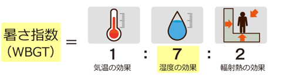
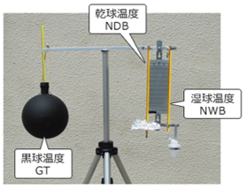
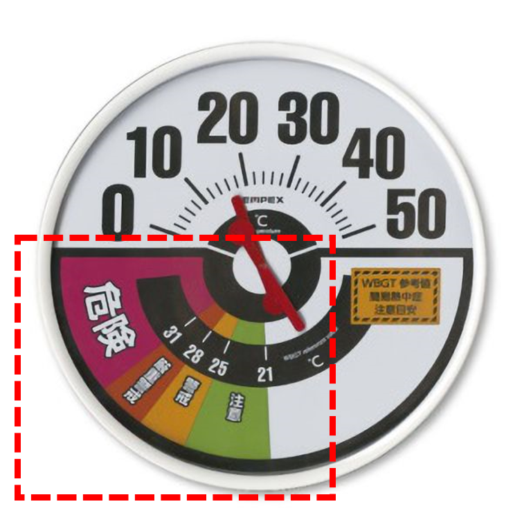
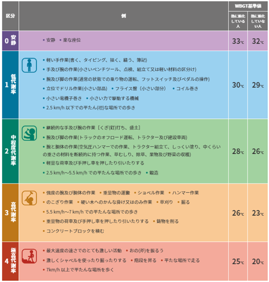
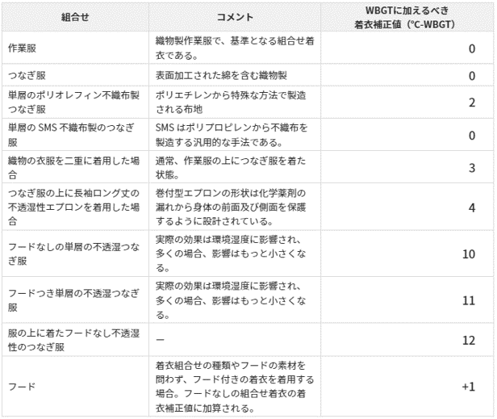

WBGT値とは一言でいうと、暑さ指数です。
通常の気温だけではわからないような湿度や輻射熱
といった要素も取り入れています。
例えばこんな経験はありませんか？
・気温は低いのに湿度が高いと汗が大量にでる。
・コンクリートからの照り返しが熱すぎる。
これは湿度と輻射熱の影響のためです。
さきほどちらっと述べたようにWBGT値は気温・
湿度・輻射熱といった3つの要素から計算されます。
ここでは詳細な計算式は省きますが、大体以下の
割合だと思って下さい。
気温：湿度：輻射熱 ＝ 1：7：3
3つの中でも湿度は特に重要な要素です。湿度が
高い状態だと、体表面の汗を上手く蒸発させること
ができないため、体温が下がらず、熱中症の発症に
つながってしまいます。


さて、熱中症予防のためにWBGT値が知ることが
重要だとわかったと思います。それでは次のステッ
プとして、実際に自職場のWBGT値を評価してみま
しょう。
さて、作業に対応したWBGT基準値と記載されてい
ますが、この表現に疑問がある方はおられますか？
それが正しい反応だと思います。しかし、WBGT値
は、作業ごとに変化する値なのです。
下の2つの表を見てください。



左が作業ごとの身体作業強度、右が衣服の種類による補正を表したものです。これを見ると、まず作業の負荷
ごとにWBGT基準値が変わっていることがわかります。つまり、激しい作業だと比較的WBGT値が低い時でも、
十分に気を付ける必要があります。
また、不浸透のつなぎなど、熱を逃がさない構造をしている服装では、WBGTの測定値に対して、さらに
補正値を足す必要があります。
例：職場のWBGTを測定した所、25℃であったが、フード付きの不浸透のつなぎを着用するため、＋11℃し、
WBGT値は36℃と考える。